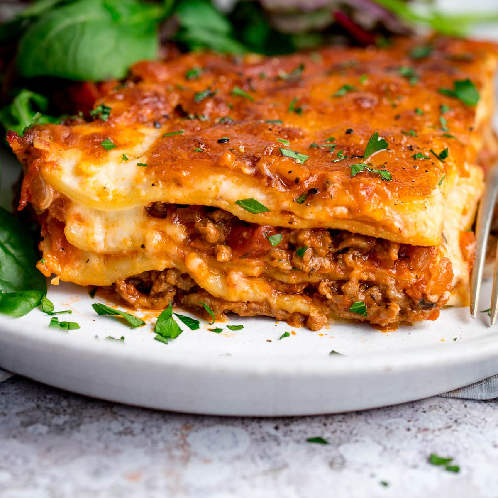

Lasagne Recipe

Lasagne is a heart-warming feast that the whole family loves.
While this traditional Italian dinner is deliciously tasty, it's
also economical! Lasagne is perfect for lunches and left-overs;
plus it's easy to freeze and bring out whenever a quick meal is
needed. Made with layers of mince, pasta and creamy cheese sauce,
this classic beef lasagne recipe ticks all the boxes.
Ingredients
- 1 1/2 tbsp olive oil
- 1kg beef mince
- 1 large brown onion, chopped
- 3 garlic cloves, crushed
- 1/3 cup tomato paste
- 3 cups fresh tomato sauce
- 1 tsp oregano leaves
- 1/2 cup roughly chopped fresh basil leaves
- 5 fresh lasagne sheets
- 1 cup grated taste cheese
Steps
-
Heat 1 tablespoon oil in a deep frying pan over medium-high heat.
Cook mince, in batches, until browned. Transfer to a bowl.
- Heat remaining oil in pan. Add onion. Cook, stirring, for 3 minutes
or until soft. Add garlic. Cook, stirring, for 1 minute. Return
mince to pan. Add tomato paste. Cook, stirring, to combine.
Stir in tomato sauce and dried oregano. Bring to the boil.
Reduce heat to low. Season with salt and pepper. Simmer, stirring
occasionally, for 30 minutes. Remove from heat. Stir in basil. Cool
for 15 minutes.
- Meanwhile, make the cheesy sauce. Melt butter in a saucepan over
medium-high heat. Add flour. Cook, stirring, for 2 minutes or until
mixture is bubbling. Gradually stir in milk. Cook, stirring, for
5 minutes or until sauce thickens. Remove from heat. Stir in cheese.
Season.
- Grease a 10-cup capacity ovenproof dish. Line base with pasta.
Spoon 1/3 of the mince over pasta. Top with 1/3 cup cheesy sauce.
Repeat, finishing with pasta. Top with remaining sauce. Cool. Top
with cheese. Cover with plastic wrap, then foil. Freeze for up to
2 months.